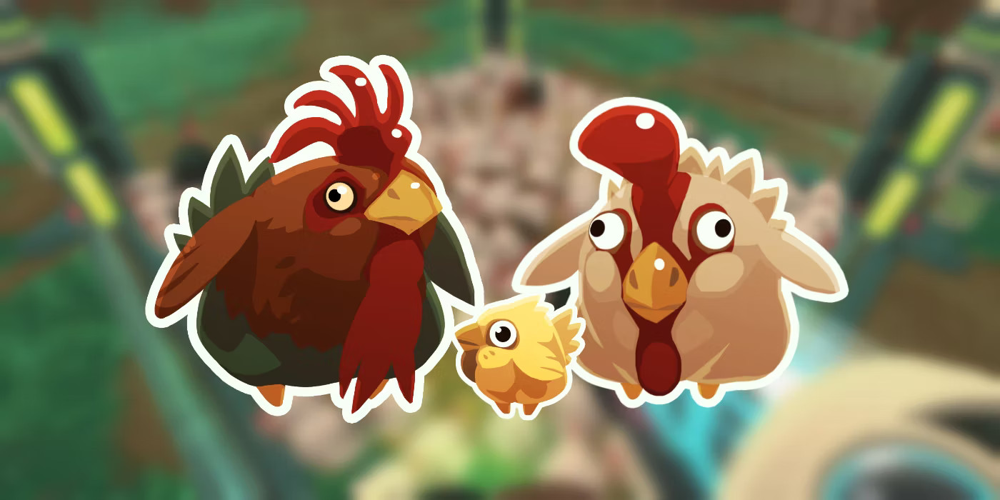
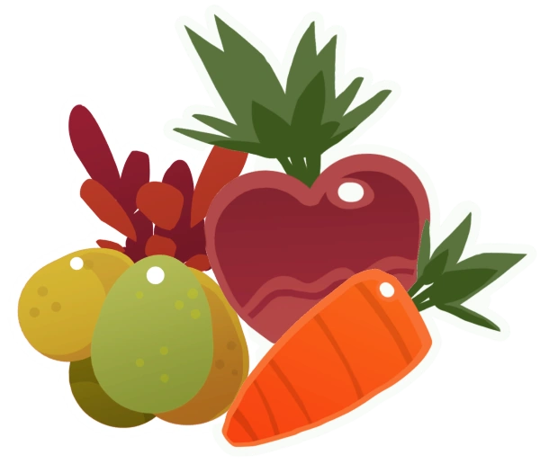

Comida
Comida é uma série de itens comestíveis usados para alimentar slimes . Os alimentos são
divididos em 4 categorias principais:
-Frutos que se encontram nas árvores,
-Vegetais que são encontrados crescendo no solo,
-Carne , que consiste em galinhas e é frequentemente encontrada em ninhos.
-Nectar , que pode ser encontrado em grandes flores.
Quando um Slime come comida, ele produz um plort , e sua agitação e fome diminuem. Cada slime tem uma dieta particular, e a maioria deles comerá alimentos de uma das três categorias de alimentos padrão e não comerá alimentos fora de sua dieta. Na maioria dos casos, a comida favorita de um slime estará na mesma categoria de alimentos que sua dieta geral. A dieta de um slime pode ser expandida convertendo em um Largo e pode ter duas comidas favoritas em vez de uma. Um Slime ou largo que come um alimento preferido produzirá parcelas duplas.

Exemplos de comidas
|
Galinha Galinha é a carne mais comum e amplamente disponível no jogo, e é um dos primeiros alimentos que um rancheiro encontra junto com a Pogofruta e a Cenoura . Galinha As galinhas são frequentemente encontradas em ninhos acompanhadas por suas contrapartes do Chickadoo e ocasionalmente um Galo , mas também podem ser encontradas em abundância em The Overgrowth , em caixotes , e oferecidas como recompensa no Range Exchange . |
 |
|  |
Frutas e vegetais vão apodrecer se não forem consumidos ou se eles entrarem em
contato com um Brreu; comida podre eventualmente vai disaparecer, porém, se fizer
contato com o sugador vac ela vai disaparecer imediatamente.
|